Make it look like 1998.
Retro Horror Camera Kit gives a Unity 6 URP camera the PS1 and VHS treatment: low resolution, 15-bit color, tape damage, CRT glass and a camcorder date stamp. Every setting is a Volume override; one window sets it all up.
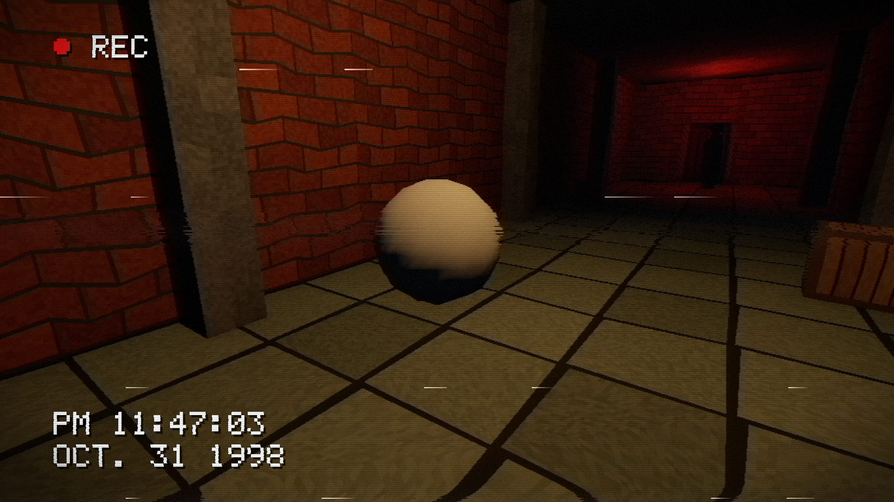
Same scene. Different decade.
Left: URP out of the box. Right: the PS1 Survival Horror look, 270 lines, 15-bit color and the 4×4 Bayer dither the PlayStation used. Drag across the picture.
The corridor, its materials and both demo scenes ship with the kit.
Sixteen looks, one click each.
Pick one in the Setup Window and it lands on a global Volume. Every look below is the same camera in the same corridor, so you can compare them directly. Duplicate one and make it yours.
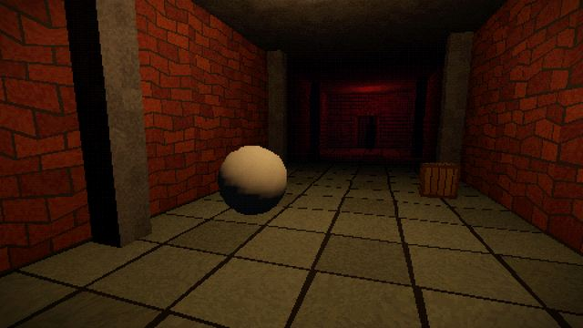
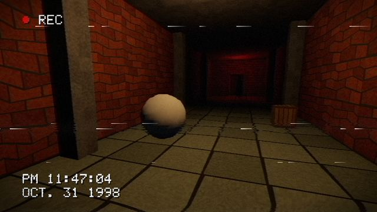
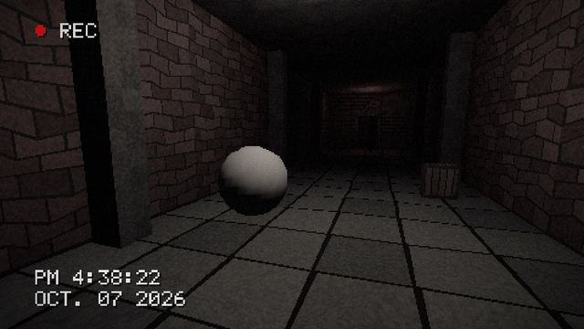
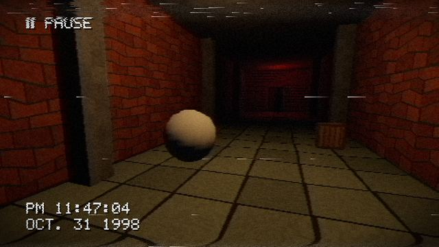
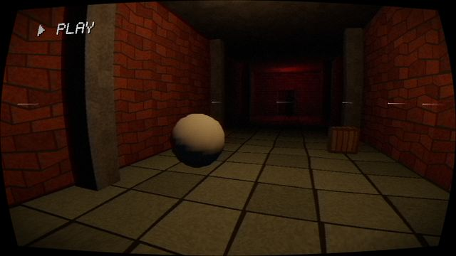
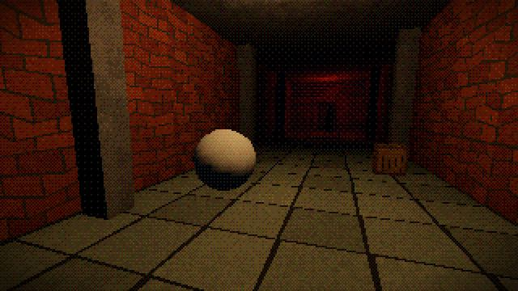
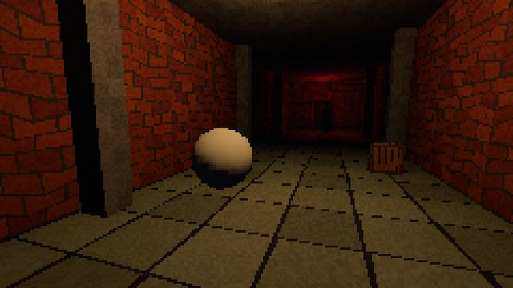
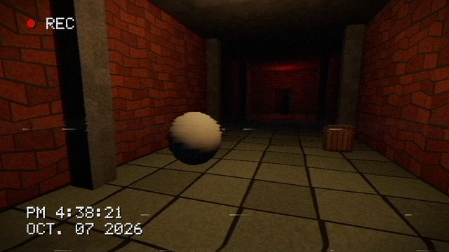
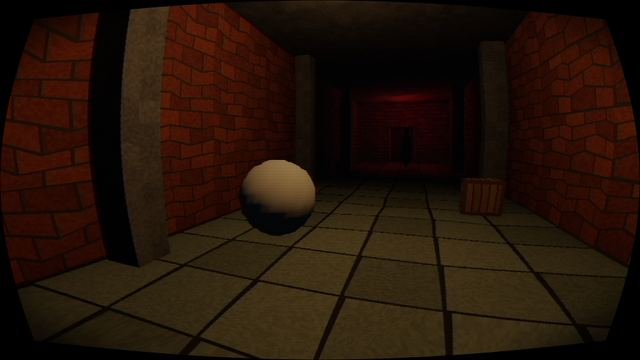
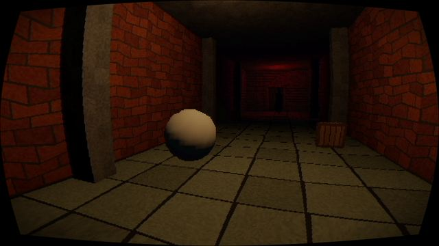
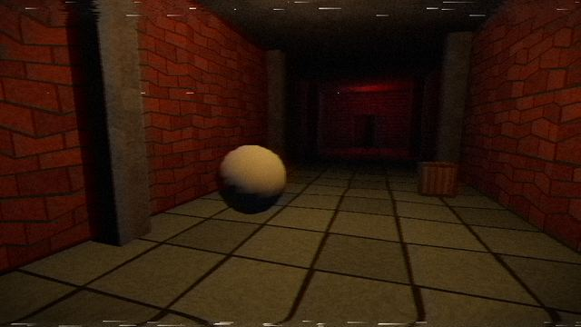
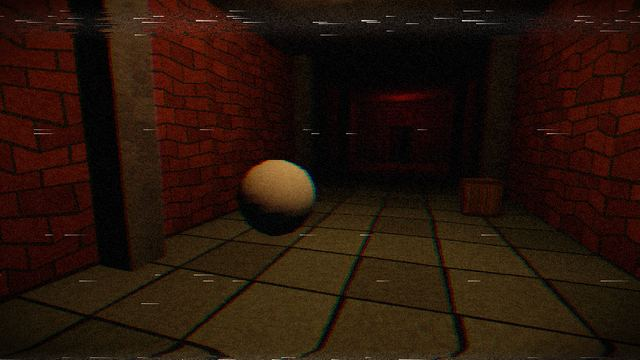
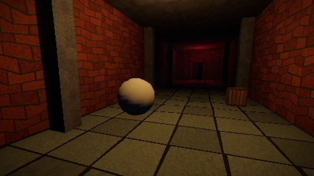
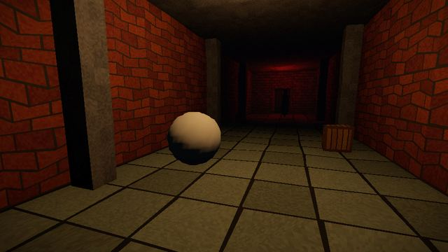
What’s on the tape.
Full-screen effects run after URP’s own post-processing. Settings you leave off cost nothing: their code is compiled out, and an inactive effect adds no render pass.
| PSX | Pixelation with perfectly even pixels, 15-bit style color reduction, 4×4 Bayer ordered dither. | Volume |
|---|---|---|
| VHS / CRT | Chroma bleed, chromatic offset, tracking errors, head-switching noise, tape grain, scanlines, CRT curvature, vignette. | Volume |
| Camcorder | Blinking REC, PLAY or PAUSE, and the player’s real date or one you choose, burned into the tape with a built-in bitmap font. | Volume |
| PSX Lit | Vertex jitter, affine texture warping, and per-vertex lighting that works with Forward+. Per-pixel mode for shadowed flashlights. | Material |
| Retro Sky | Procedural skybox: striped synthwave sun, cratered moon, stars, clouds, a PS1 low-res mode, and blending into your scene fog. | Material |
| Neon Grid | A glowing floor whose lines stay clean in the distance instead of shimmering. | Material |
| Setup | One window adds the effects to every URP renderer in the project, then applies looks and skies. | Editor |
| Extras | Two demo scenes with live preset switching, and a 22-page PDF manual. | Included |
Six skies to match.
Each sky remembers the scene fog it was made for and applies it with one click, so the floor fades into the horizon instead of ending at a hard line.
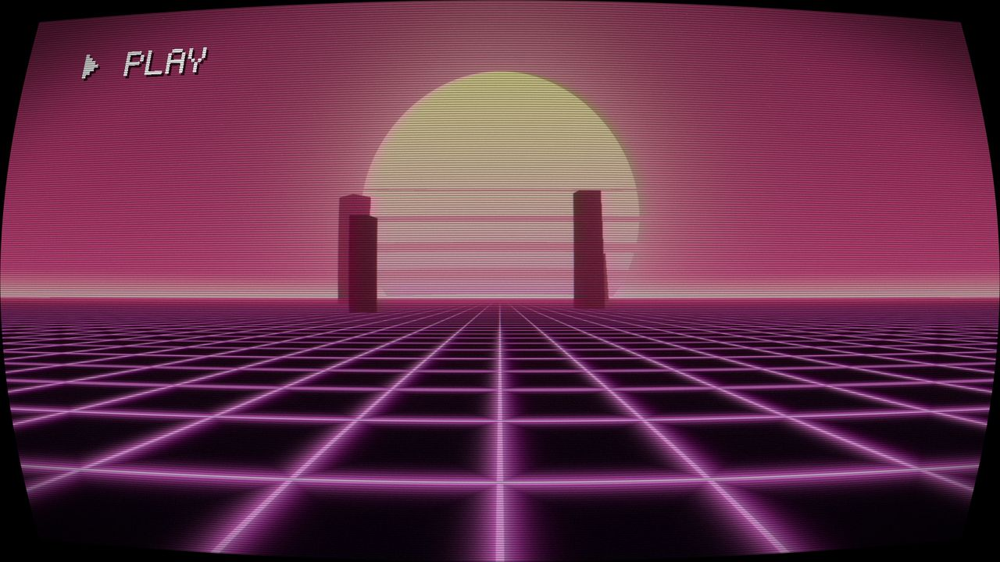
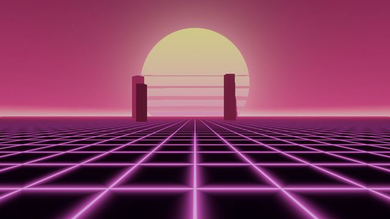
Synthwave Sunset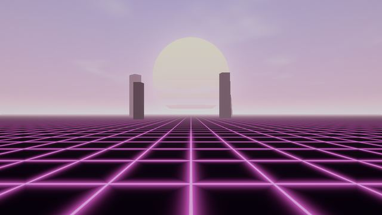
Pastel Vaporwave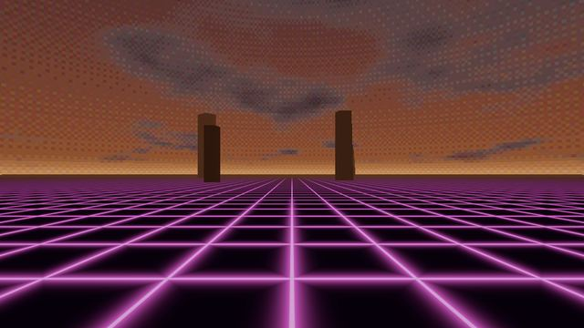
PS1 Dusk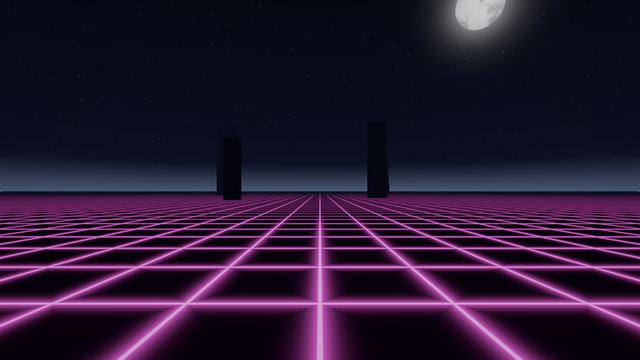
Night Stars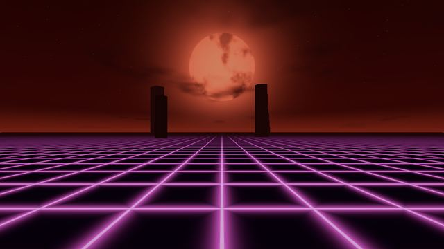
Blood Moon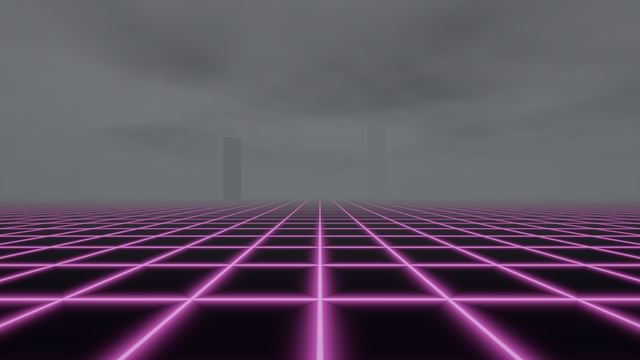
Overcast Fog
Rolling in three steps.
-
Import the package
Drop it into a Unity 6 project that uses URP. No other packages needed.
-
Add the effects
Open Tools › Retro Horror Kit › Setup Window and click Add Missing Renderer Features. It covers the renderers of every quality level, PC and mobile alike.
-
Pick a look
Apply a look and, if you like, a sky. Then tweak any setting on the Volume, or drive it from code as the player loses their nerve.
Before you rewind.
Which Unity versions does it support?
Unity 6.0 LTS or newer, with URP 17.0 or newer. Tested on 6.0 and 6.3. The kit is written for Render Graph; URP Compatibility Mode isn’t supported.
Built-in pipeline or HDRP?
No. It’s made for the Universal Render Pipeline only.
Forward, Forward+ or Deferred?
Forward and Forward+, both tested. Deferred hasn’t been tested yet; the docs list what to expect there.
Which platforms has it been tested on?
Windows with DirectX 12: Unity 6.0 and 6.3 in the editor, and a 6.3 player build. Mobile, consoles, WebGL and VR haven’t been tested yet. The code accounts for VR, but it isn’t verified, so it isn’t promised.
Does it need other assets or packages?
No. Only URP. The demo scenes use the Input System package when your project has it and fall back to the old Input Manager when it doesn’t.
Do I get the source code?
Yes. All C# and HLSL is included and commented, so you can read it, change it and learn from it.
Can I use it in commercial games?
Yes, in as many of your games as you like. You can’t resell or redistribute the kit itself, on its own or as part of another asset.